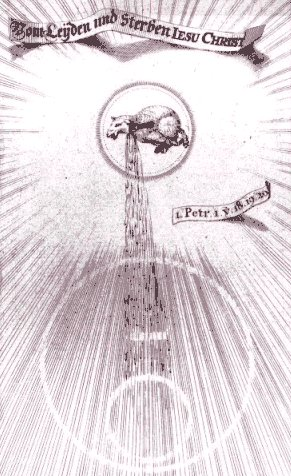
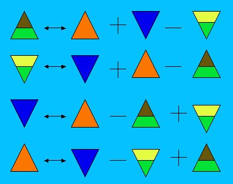
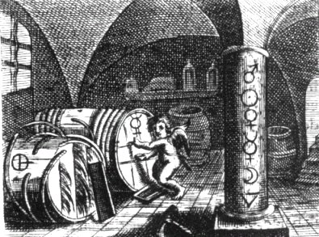
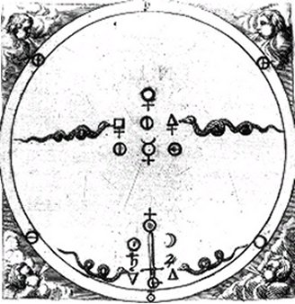
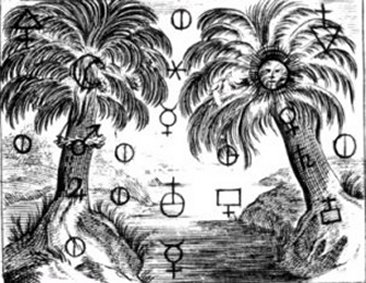
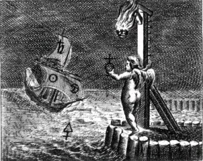

Emblema XVII.
revu le 5 mai 2002
Orbita quadruplex hoc regit ignis opus.
(Le quadruple globe régit cette œuvre du feu1.)
Toi qui veux imiter l’œuvre de la nature,
Recherche quatre globes2 enfermant en leur sein
Un feu léger qui les anime. Le plus bas
T’évoquera Vulcain, et le suivant, Mercure [1, 2].
La troisième orbe est le domaine de la Lune.
La plus haute, Apollon, t’appartient ; on la nomme
Feu de nature3. Cette chaîne Dans l’art saura guider ta main.
Les philosophes ont fait mention en de nombreux endroits des quatre sortes de feux nécessaires à l’œuvre naturelle, ainsi Lulle, l’auteur de l’Echelle, Riplée et une multitude d’autres.
« Et parlant alors des feux, (dit l’Echelle), Raymond s’exprime ainsi : " Il faut remarquer qu’il y a ici des opérations contraires, car si le feu contre nature dissout l’esprit du corps fixe en eau de nuée et contracte le corps de l’esprit volatil en terre coagulée, inversement le feu de nature coagule l’esprit dissous du corps fixe en terre sphérique et résout le corps de l’esprit volatil rendu fixe par le feu contre nature, non en eau de nuée mais en eau philosophique. " »4
Riplée parle plus clairement de ces feux dans les termes suivants :
« Il y a quatre sortes de feux que tu dois connaître : le feu naturel, le feu innaturel, le feu contre nature et le feu élémentaire qui enflamme le bois. Ce sont ces feux que nous utilisons et pas un de plus. Le feu contre nature doit torturer les corps. C’est le dragon, je te l’affirme, brûlant avec violence comme le feu infernal. Le feu de nature est le troisième menstrue. Il est présent au sein de toutes choses. Nous appelons innaturel le feu occasionné, comme la chaleur des cendres et des bains destinée à putréfier. Sans ces feux tu n’amèneras rien à la putréfaction de manière que ta matière soit séparée et à la fois proportionnée à une nouvelle conjonction. Fais donc à l’intérieur de ton verre un feu qui brûle mieux que le feu élémentaire. »5
Telles sont leurs paroles.
On parle ici de feux parce qu’ils possèdent une vertu ignée, le feu naturel en coagulant, le feu innaturel en dissolvant, le feu contre nature en corrompant, et le feu élémentaire en fournissant la chaleur et le premier mouvement6. On observe entre eux un ordre selon lequel ils s’enchaînent ; le second est excité à agir par le premier, le troisième par le second, le quatrième par le troisième et le premier à la fois7. Ainsi l’un est agent et l’autre patient, et le même est à la fois agent et patient selon le point de vue8. Ce que l’on observe dans les anneaux ou les poinçons de fer reliés entre eux par un aimant et rattachés par une attraction mutuelle se voit aussi dans ces feux. Le feu élémentaire, tel l’aimant, envoie sa puissance à travers le second, et le troisième jusqu’au quatrième, et le premier les unit et les fait demeurer reliés l’un à l’autre, jusqu’à ce que l’action interne entre les feux supérieurs soit achevée. Le premier est, de nom et réellement, le feu élémentaire. Le second est air ou aérien, le troisième est d’eau ou de nature lunaire, le quatrième, de terre9.
Il est superflu de parler du premier, car il est connu de tout ce qui voit et touche. Les trois autres sont dragons, menstrues, eaux, soufres et mercures. On les dit dragons, car ils sont dotés de venin, dévorent les serpents de leur race, usent et altèrent les corps qui leur sont mêlés, c’est-à-dire coagulent et dissolvent10. Ils sont appelés menstrues, car le fœtus philosophique est produit et nourri par eux jusqu’à sa naissance. Lulle, au Livre de la Quinte Essence (3e distinction), mentionne un double menstrue, végétal et minéral11. Riplée, dans la préface des Portes, le veut triple12 ; mais en réalité tous ne font qu’un et se rejoignent13. De tous en effet est engendré le fœtus, et son eau blanche précède sa naissance ; cette eau n’appartient pas à la substance du fœtus, mais à ce qu’il a de superflu ; il faut donc la séparer. Les feux sont encore des eaux, car elles manifestent dans le feu une nature aqueuse, c’est-à-dire la fluidité et la nature liquide qui conviennent à l’eau. On sait que les eaux possèdent des propriétés admirables et diverses : certaines sont pétrifiantes et se coagulent en tufs très propres à la construction des demeures des hommes14. Les eaux des philosophes leur sont très semblables : elles durcissent et acquièrent la résistance des pierres. On leur donne encore le nom de soufres à cause de la nature sulfureuse qu’elles ont en elles. Car le soufre de la nature, mêlé à un autre soufre, devient une seule chose, deux soufres sont dissous par un seul et les soufres sont retenus par les soufres, comme Yximidius le déclare dans la Tourbe. Ce que sont les soufres, Dardaris l’indique en ces termes :
« Les soufres sont les âmes cachées dans les quatre éléments ; extraites par l’art, celles-ci se contiennent l’une l’autre et s’unissent. Et si vous gouvernez et purifiez convenablement par l’eau la chose cachée qui est dans le ventre du soufre, celle-ci va à la rencontre de sa propre nature et se réjouit ; de même l’eau se réjouit de son égal. »15
Mosius dit de son côté :
« Je vais vous dire ce que c’est : Un, certes, c’est l'argent-vif : deux, le corps composé en lui : et le troisième est l’eau de soufre qui sert à laver, à user et à gouverner l’un jusqu’à ce que l'œuvre soit achevée. »16
Ce que l’on a dit du soufre, il faudra l’entendre aussi du Mercure. Ainsi le même Mosius dans ce qui suit :
« L’argent-vif Cambar est la magnésie, l’argent-vif ou orpiment est le soufre qui monte du composé mixte. »17
Mais j’arrêterai ici l'énumération de ces témoignages, car ils sont innombrables et à la portée de chacun.
Ces quatre feux sont enfermés dans des sphères ou cercles, c’est-à-dire que chacun a son propre centre duquel ou vers lequel tend son mouvement, et cependant on les observe reliés en partie par la nature et en partie par l’art, de telle sorte que l’un sans l’autre ne fait que peu de chose ou rien, et qu’en outre l’action de l’un est passion de l’autre et inversement18.
Notes1. Ce chapitre traite des feux et de leurs régimes. Par là même, il fait référence aux Quatre Eléments de Platon et d'Empédocle. Sujet encore développé dans de nombreuses sections du site. Batsdorff y consacre le chapitre IV de son Filet d'Ariadne. Basile Valentin en parle dans son Char Triomphal de l'Antimoine ; Alexandre Sethon le traite indirectement au chapitre VII de la Nouvelle Lumière Chymique. Pontanus y consacre son traité de l'Epitre Philosophique. L'Anonyme d'Huginus à Barma lui octroie une partie composée de 10 chapitres [cap. LVII à LXVI]. Artéphius, dans son Livre Secret, n'est pas avare de réflexions sur le feu des Sages même si, en dépit de ce que prétend Fulcanelli, « il en parle ouvertement ». Le Mutus Liber, dans le commentaire qu'en a donné Pierre Dujols de Valois [Hypotypose], donne de précieux renseignements par l'image. Jean D'Espagnet dans son Oeuvre secret d'Hermès consacre plusieurs chapitres au feu [cap. 92, 93] puis une section entière nommée le Triple Feu [cap. 94 à 107]. Jean d'Espagnet se montre très précis mais est-il charitable ? Quoi qu'il en soit, son Oeuvre est l'un des traités de l'Art Sacré parmi les plus distingués qui soient. Ripley, dans ses Douze Portes, traite aussi de ce point de science [Portarum III et XI]. Jacques Tol donne d'utiles précisions dans son Chemin du Ciel Chymique. Salomon Trismosin, dans sa célèbre Toyson d'or [d'après le Splendor solis], glisse des détails notables, mais de façon moins affichée que d'autres, ce qui, par expérience, ne veut pas dire que ces détails ne soient pas intéressants ou importants. Le pseudo Sethon [sans doute Michel Sendivogius] donne, dans le Traité du Sel [par ailleurs attribué au sieur Clovis Hesteau de Nuysement], un chapitre sur les degrés du feu [cap. 7]. Enfin, on trouve dans les traités plus modernes tels que l'Hermès Dévoilé de Cyliani, la trilogie fulcanellienne, les ouvrages d'E. Canseliet toutes sortes d'indices sur les feux et leur imposition. Mais enfin, les ouvrages modernes ne donnent que des renseignements de seconde main.

FIGURE I
(extrait de Jacob Bôhme, Theosophische Wercken, 1682 : le FEU du Bélier)C'est avec raison que Bôhme voyait dans le Bélier le constituant principal du FEU des Sages ; il procure en effet l'une des matières qui permet la préparation de la rosée de mai.
- point 1 : avant d'aborder l'étude des feux, il faut absolument avoir une idée nette de la théorie des Quatre Eléments et savoir ce qui se cache derrière le mot quintessence ;
- point 2 : il faut confronter les textes les plus avisés - qui ne sont pas toujours les plus clairs - sur l'étude des feux ;
- point 3 : il faut étudier des textes de recension. Ils ne sont pas nombreux. Nous conseillons les Fables Egyptiennes et Grecques ainsi que le Dictionnaire mytho-hermétique de Dom Pernety ; les F.E.G. sont disponibles sur le serveur Gallica, hélas limitées au tome I, et le Dictionnaire peut être consulté sur deux sites : Librairie du Merveilleux et Hermétisme et alchimie.
- point 4 : aboutir à une synthèse logique permettant de savoir comment allumer le feu, l'entretenir, doser et savoir varier le calorique aux différentes époques de l'oeuvre. En un mot, savoir entrer dans le labyrinthe de Salomon, accéder à la chambre centrale et savoir se sortir de l'entrelacs hermétique.
Nous espérons que le lecteur nous pardonnera, à ce niveau d'investigation, de ne pas nous livrer à des redites inutiles, puisque tout ce qu'il lui faut apprendre et comprendre, sous le rapport de ce feu des Sages, se trouve expliqué maintes fois déjà dans dans d'autres pages.
2. Ces quatre globes symbolisent les Quatre Eléments dans leurs rapports, pris un à un, avec le FEU. Pour un exposé complet sur les Eléments, voyez nos commentaires de l'Atlas des Connaissances humaines de Chevreul, en particulier ceux portant sur les tableaux I, II et III. Le tableau I représente en mandala un résumé remarquable des éléments de Platon, avec leurs correspondances chez Athénée et Galien. Le tableau II résume la Matière envisagée du point de vue des alchimistes. Soit dit en passant, ce tableau montre que Chevreul avait analysé tout l'ensemble des idées alchimiques et avait une notion très affinée des buts poursuivis par les Adeptes. Le tableau IIIest unique en son genre. Il montre - selon Chevreul - l'idée que se faisait Artéphius [Artefius] de l'alchimie.
Si nous souhaitons savoir en quoi chaque élément tient du feu, il nous faut revoir les équations déduites du Timée, relativement à la transmutation des Eléments selon Platon. Ces équations, nous les avons données dans le commentaire d'un texte singulier, nommé Science et Religion : la Cristallogénie. Nous avons pu remarquer que ce texte était assez hétérogène mais passionnant sous l'angle hermétique, qui se situe précisément entre la gnose, qui se rapporte plutôt au religieux, et le rationnel qui n'est jamais que l'expression d'une synthèse d'hypothèses a posteriori portées sur des points précis de philosophie naturelle sans d'ailleurs que l'on puisse poser un jugement conceptuel quant à ce qui sous-tend cette synthèse, quand on l'envisage sous un rapport entropique. Quoi qu'il en soit, voici ce tableau :
FIGURE II
(interprétation personnelle des transmutations élémentaires)Ce tableau permet d'aboutir à deux sous-ensembles.
a)- le premier, résultant de l'inter-action AIR - TERRE, c'est-à-dire de l'élément volatil immatériel opposé à l'élément fixe matériel, rapport entendu d'une façon absolue puisqu'on ne peut pas avoir davantage de fixité [sécheresse] et de volatilité [humidité]. Les correspondances sont les suivantes :FEU = AIR - EAU + TERRE
FEU = - EAU + AIR + TERRECes deux équations sont semblables et expriment indubitablement que le FEU [entendu sous l'espèce élémentaire de Platon] est un mélange d'AIR et de TERRE moins l'EAU.
b)- le second, résultant de l'inter-action EAU - FEU, c'est-à-dire de l'élément mobile froid opposé à l'élément mobile chaud, là encore rapport entendu de façon absolue puiqu'on ne peut pas avoir davantage de froid [froidure] et de chaud [chaleur]. Les correspondances sont les suivantes :
FEU = EAU + AIR - TERRE
FEU = EAU - TERRE + AIRLà encore, ces deux équations sont semblables et expriment que le FEU est un mélange d'EAU et d'AIR, moins la TERRE.
Dans ces deux sous-ensembles, le FEU obtenu diffère dans le 1er cas par l'EAU qui est en moins et dans le 2ème cas par la TERRE qui est en moins. Dans les quatre relations, ne reste comme élément dominant que l'AIR, ce qui est parfaitement conforme à la logique. Dans les deux cas, les relations expriment un processus dynamique. Dans le 1er cas, nous avons affaire à une EAU qui se congèle : cela peut survenir dans le cas de l'eau qui se refroidit ou de la lave qui perd sa chaleur. Ainsi observons-nous que dans ce cas précis, nous obtenons un FEU passif qui, « donné » par la nature va dans un cas être retiré à l'EAU [glace = terre froide naturelle : ¯ actuelle du FEU de l'EAU] sous sa forme naturelle et dans l'autre cas, sous sa forme élémentaire, procuré à l'AIR [terre élémentaire = terre chaude naturelle : ¯ actuelle du FEU dans la lave]. Il n'existe pas d'autre moyen d'obtenir ce FEU passif [nous l'appelons tel parce qu'encore une fois, ce n'est pas, en principe, l'artifice de l'homme qui le procure]. Dans le second groupe, le FEU est provoqué et nous avons affaire à une TERRE qui se sublime. Le feu est alors visible sous sa forme élémentaire et procure à la fois la chaleur et la lumière. La TERRE peut devenir FEU, soit sous forme liquide [fusion = feu liquide artificiel ou naturel : actuelle du FEU], soit sous forme aérienne [flamme = feu aérien artificiel ou naturel : actuelle du FEU].
3. Que recouvre cette expression mystérieuse : « feu de nature » ? C'est l'un des secrets les plus hauts de l'oeuvre...Fulcanelli a laissé entendre que seuls Artéphius et Pontanus, peut-être...et encore, avec des réserves, auraient glissé des allusions furtives mais décisives sur cet arcane suprême. Pour ce que nous en savons, notre connaissance est assez réduite [1, 2, 3, 4, 5, 6, 7, 8, 9, 10, 11, 12, 13, 14,]. Peut-être est-ce Philalèthe, malgré le caractère fort abscons - chose habituelle chez Eyrénée - de son discours, qui pourra nous laisser approcher de la porte fermée du Palais du Roi :
FIGURE III
(Le Lion d'Or ou Vinaigre des Sages - De Goude Leeuw, 1675 : là, gît le feu de nature)
XIV. - Conjonction grossière du menstrue avec son Soufre, pour former la production du feu de nature.Pris comme tel, le texte de Philalèthe s'observe comme une sorte de poème surréaliste sans rime, avant la lettre. C'est assez dire qu'on ne saura le comprendre qu'avec l'esprit, et mêlé d'un brin de sel. Car le menstrue ne saurait désigner autre chose que le Mercure, et le Soufre autre chose que les deux chaux métalliques. On observe que Philalèthe fait référence à ses perfides Aigles qui semblent défier toute raison. Se pourrait-il qu'il s'agisse d'une préparation effectivement réitérée huit ou neuf fois, peut-être pour avoir tout simplement une quantité, une provision, suffisante du précieux Mercure ? Nous ne saurions décider d'un point de science si important...Quoi qu'il en soit, ce Mercure - puisqu'il s'agit bien d elui - est mêlé du Soufre rouge, dénommé ici Laton préparé. Philalèthe ne commet ici qu'un demi-mensonge puisqu'il prend la précaution de nous dire que le Laiton est préparé : c'est qu'il a en vue le Soufre rouge. Il souhaite donc nous parler de la sublimation indispensable de ce Soufre.Prenez du Mercure préparé, purgé et bien tiré par le travail de sept, huit, neuf ou dix aigles au plus; mêlez-le avec le Soufre rouge appelé Laton préparé, c'est-à-dire qu'il faut deux ou trois parties au plus d'eau philosophique pour une partie de Soufre pur, purgé et broyé [Expériences sur la pénétration du Mercure des Sages pour la pierre, par le régule de mars, ou fer, tenant de l'antimoine, et étoilé, et par la Lune ou l'argent]
4. Habituel entrelacs dispodé par les alchimistes pour induire l'impétrant en confusion. Que souhaite dire ici le pseudo-Lulle ? Que le Soufre doit être sublimé dans le Mercure - i.e. que la chaux métallique doit être dissoute et résolue en son humide métallique dans le fondant ; qu'il faut entendre ces opérations sous un rapport dynamique [ce n'est pas la première fois que nous remarquons que les alchimistes avaient comme une idée préconçue de la thermodynamique] : le temps a ici une importance capitale, et une fois encore, le temps nous renvoie au symbolisme de la double roue. Entrer dans le labyrinthe de Salomon ; pénétrer dans la chambre centrale muni du précieux fil d'Ariane [le Filet d'Ariadne] ; être capable de sortir de l'entrelacs avec la Pierre in manu propria...Opération qui nécessite de tout savoir de la réincrudation des corps. Puisque dans un premier temps, l'âme monte au ciel dans un mouvement de sublimation ; et que dans un deuxième temps, elle est promise à être recorporifiée [réincrudée] sous une forme plus noble que l'originale.
5. Nous devons éprouver de l'admiration devant tant de perspicacité, de simplicité, en un mot, de science. Car Ripley, qui manie la cabale en virtuose, sait très bien que parlant ainsi, il n erisque d'être compris par personne. Qui irait, en effet, distinguer le feu innaturel du feu contre nature ? Ou le feu naturel du feu élémentaire ? Et pourtant, Ripley emploie les mots justes et atteint l'objectif avec précision : le feu contre nature, c'est l'eau ignée ou le feu aqueux. En un mot, le mariage des contraires. Le mot dragon lève toute hypothèque à cet égard et montre que ce feu est celui exercé par le Mercure dans son premier état. Que le feu innaturel est celui qui est dû aux substance corrosives - acides ou bases - que les Anciens comprenaient sous les épithètes de borith ou de natron. Enfin, lorsque Ripley nous conseille de faire un feu qui permette de putréfier les matières, il sosu-entend de les faire disparaître, c'est-à-dire de les rendre entièrement solubles dans la substance même du Mercure.
FIGURE IV
(Le Lion d'Or ou Vinaigre des Sages - De Goude Leeuw, 1675 : les attributs du dragon)La figure IV montre tous les attributs du feu dit innaturel. Notez la présence des vents cardinaux et le symbole circulaire qui y est associé. Du cercle simple [Mercure] en bas à droite, en passant par le sel de tartre [en bas à gauche], puis par le vert-de-gris [ioV pour rouille] en haut à gauche ; et enfin, en haut et à droite, le nitre vitriolé, c'est-à-dire l'Arcanum duplicatum.
6. Le premier feu est celui de Vulcain ardent ou Héphaïstos. C'est le feu commun ou élémentaire, celui que l'on voit par sa flamme. Le feu contre nature qui corrompt est celui qui est exercé « de l'intérieur » par le Mercure. Le feu « innaturel qui dissout » est superposable au feu contre nature. Il est, en effet, plus immédiat de s'imaginer un feu qui dissout qu'un feu qui corrompt [il faut sans doute entendre par là des phénomènes d'oxydo-réduction que les Anciens ne s'expliquaient pas]. Enfin, le feu naturel qui coagule est le même que le premier feu [Vulcain ardent] lorsque le Mercure s'est volatilisé en grande partie, ce qui précipite la coagulation progressive de l'eau mercurelle résiduelle. C'est la coagulation - ou plutôt la cristallisation - de ce résidu qui est la Pierre au rouge.
7. La séquence exacte est la suivante :Vulcain à feu de corruption ßà feu de dissolution à feu de coagulation.
Il existe une interaction entre le feu de corruption et celui de dissolution.
8. il y a là une subtilité qui n'a pas échappé à Fulcanelli. Ici, Maier parle du feu alors que l'auteur du Mystère des Cathédrales parle des substances. L'agent est le Mercure et le patient, le Soufre. Voila pour le feu. Pour les substances, le Sel est le patient tandis que l'Âme est l'agent, c'est-à-dire le Soufre rouge. D'où il résulte que le Soufre peut être, selon comme on se place, considérer comme patient, en tant que transporté par le Mercure ou en tant qu'agent, prêt à être infusé dans le Sel.
9. Maier emploie des termes différents pour signifier les mêmes choses. Redisons donc que le feu élémentaire est la flamme : visible ou invisible. Invisible, c'est la quantité de calories nécessaire à obtenir des phénomènes d'oxydo-réduction. Il s'agit évidemment d'une réaction exothermique. Le feu aérien est le Soufre sublimé dans l'Air des Sages, c'est-à-dire le milieu ou moyen de jonction. Le feu liquide est le Mercure lui-même. Le feu de terre est celui qui est requis à l'époque de la coagulation du Mercure, tardivement dans la Grande coction.
10. Nous avons déjà parlé de tout cela. Le maître mot est ici venin [ioV] qu'il faut rapprocher de ion, violette.
11. Il s'agit des composants du Mercure. Le menstrue végétal est l'alkali fixe ; le minéral est le salpêtre. Un autre sel végétal, de vertu céleste, doit être mentionné : le tartre, puisqu'il est produit par l'aide conjuguée de Zeus et de Bacchus [raisin].
12. Ce n'est pas tout à fait exact. Dans sa Préface aux Douze Portes, Ripley parle de trois menstrues : le 1er menstrue participe du Lion vert et sert à calciner le corps de la Lune et du Soleil ; le 2ème menstrue est qualifié d'humide végétable. Le 3ème menstrue est une humidité permanente, incombustible par laquelle l'Arbre d'Hermès [c'est-à-dire les métaux] est réduit en cendres [chaux métallique : oxyde]. Mais si l'on entend bien Ripley, c'est le même menstrue qu'il décrit...Mais dans le chapitre de la Séparation ou Troisième Porte, il écrit :« Il y a quatre sortes de Feux, qu'il te faut connaître, savoir naturel, innaturel, contre nature, et élémentel, qui brûle le bois, desquels nous usons et non de plus. Le Feu contre nature doit extraire les Corps, c'est notre Dragon brûlant plus violemment que le Feu d'enfer. Le Feu de nature est le troisième Menstrue, ce Feu est naturellement en toutes choses. Le Feu naturel s'appelle occasionné, comme est la chaleur des cendres qui vaut à putréfier. Sans ces sortes de Feux tu ne pourras rien conduire à putréfaction, tellement que la matière se puisse séparer, afin qu'ensemblement tout soit proportionné à une nouvelle conjonction. »
Et, par parenthèse, il nous précise que le fu de nature est le 3ème menstrue, l'humidité permanente et incombustible qui renvoie à l'humide radical métallique.

FIGURE V
(Le Lion d'Or ou Vinaigre des Sages - De Goude Leeuw, 1675 : le menstrue universel)13. Aussi bien voit-on que ces feux ne sont que des pièges où les imprudents Argonautes - les impétrants - pourraient être attirés et naufragés sur des rivages de haut fond. Aussi Maier précise-t-il, lui aussi, qu'en somme, ces feux se rejoignent et que tous ne font qu'un, qui n'est que le feu de nature, c'est-à-dire celui qu'utilise la nature, comme nous l'avons étudié dans la section du Mercure de nature.
14. Ce n'est point autre chose qu'un fondant que nous décrit Maier. Le fait que sa substance soit « superflue » par rapport à celle du BasileuV montre assez qu'il n'agit que comme moyen de transport, en véritable héraut et messager du Corps et de l'Âme. Notons l'allusion au tuf [1, 2].
15. C'est indiquer qu'il y a deux substances tenues dissoutes dans le solvant des Sages et que ces substances sont de la nature du Soufre, c'est-à-dire des chaux métalliques.
16. Un est le premier Mercure, deux, le Rebis. Trois, le Compost, c'est-à-dire le Mixte formé de l'homme double igné de Basile et du premier Mercure. L'ensemble forme le Mercure philosophique ou Mercure animé. Notez que l'eau de soufre est appelée eau Divine par Zosime. Il s'agit probablement d'un polysulfure de potassium, peut-être de foie de soufre.
17. Ce terme de Cambar a été évoqué par d'autres auteurs : Artéphius et le pseudo-Flamel [1, 2, 3, 4, 5, 6, 7,], entre autres. Voici ce qu'en dit Pernety dans ses Fables :« Les Philosophes envieux ont appelé cette confection, Rebis, & encore Numus, Ethelia, Arene, Boritis, Corsusle, Cambar, Albar œres, Duenech, Bauderie, Kukul, Thaburis, Ebisemeth, Ixir, &c. c’est ce qu’ils ont commandé de blanchir. » [F.E.G., Signes ou Principes Démonstratifs]
Notez encore que l'orpiment renvoie à l'Arsenic de Geber. Ce n'est pas de l'oxyde d'arsenic mais tout simplement le Corps de la Pierre, qui est une résine formée en grande partie de verre malléable. L'orpiment a induit en erreur quantité de Souffleurs. Pernety nous en dit ceci :
« L’idée de faire de l’or par le secours de l’Art n’est donc pas nouvelle ; outre les preuves que nous en avons données, Pline (Lib. 33. c. 4) le confirme par ce qu’il rapporte de Caligula. « L’amour et l’avidité que Caïus Caligula avait pour l’or, engagèrent ce Prince à travailler pour s’en procurer. il fit donc cuire, dit cet Auteur, une grande quantité d’orpiment, & réussit en effet à faire de l’or excellent, mais en petite quantité, qu’il y avait beaucoup plus de perte que de profit ». Caligula savait donc qu’on pouvait faire de l’or artificiellement, la Philosophie Hermétique était donc connue. » [F.E.G]
Ce ne pouvait être que de l'orpiment mêlé de traces d'or. C'est donc autre chose que les Adeptes désignent sous ce nom :
« Lorsque le mercure des Sages est mêlé avec l’argent & l’or, il est appelé l’électre des Philosophes, leur airain, leur laiton, leur cuivre, leur acier ; & dans les opérations, leur venin, leur arsenic, leur orpiment, leur plomb, leur laiton qu’il faut blanchir, Saturne, Jupiter, Mars, Vénus, la Lune & le Soleil. » [F.E.G.]

FIGURE VI
(Le Lion d'Or ou Vinaigre des Sages - De Goude Leeuw, 1675 : le phare du nautonier)18. C'est donc, encore une fois, par l'entendement qu'il faut comprendre et observer les quatre boules de feu de l'emblème XVII. Résumons donc : à chaque boule correspond du bas vers le haut : le feu vulgaire [flamme] ; le feu de corruption [putréfaction, l'oeuvre au noir] ; le feu de dissolution [dissolution, oeuvre au blanc] ; le feu de coagulation [oeuvre au rouge].